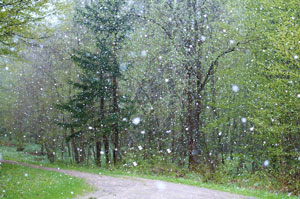
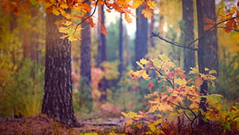
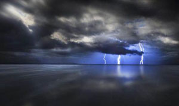
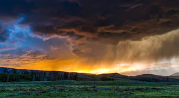
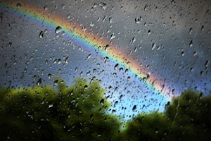

A beautiful slow snowfall at the beggining of winter. Blue skies with skattered clouds that you see thru the spring and summer.

Early fall for Preston, the leaves turn a beautiful orange and yellow.

lightning, rare sighting for Idaho.

A summers dawn, that we saw August last year, it shows a gold sky.

Sunshine and a little rain makes a beautiful Rainbow in April.